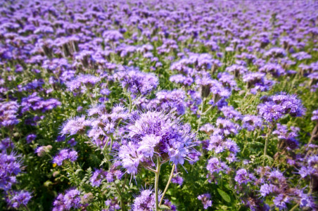

ДАНА
Среди медоносных и сидеральных культур фацелия пижмолистная сорта Дана занимает особое место благодаря своей универсальности. Этот сорт ценится за высокую нектарную продуктивность, что делает его незаменимым для поддержки пчеловодства и привлечения насекомых-опылителей. Кроме того, фацелия Дана — один из лучших сидератов: её мощная зелёная масса быстро разлагается в почве, обогащая её органикой, азотом и улучшая структуру. Растение также подавляет рост сорняков и способствует оздоровлению грунта, снижая риск заболеваний последующих культур. Благодаря короткому вегетационному периоду и холодостойкости, этот сорт можно высевать в разные сроки — с ранней весны до осени, получая и корм для скота, и зелёное удобрение, и ценный взяток для пчёл.

Направления селекции:
- Высокая нектарная продуктивность
- Быстрый набор зелёной массы
- Устойчивость к неблагоприятным погодным условиям
- Адаптация к различным срокам посева
- Повышение эффективности как сидеральной культуры